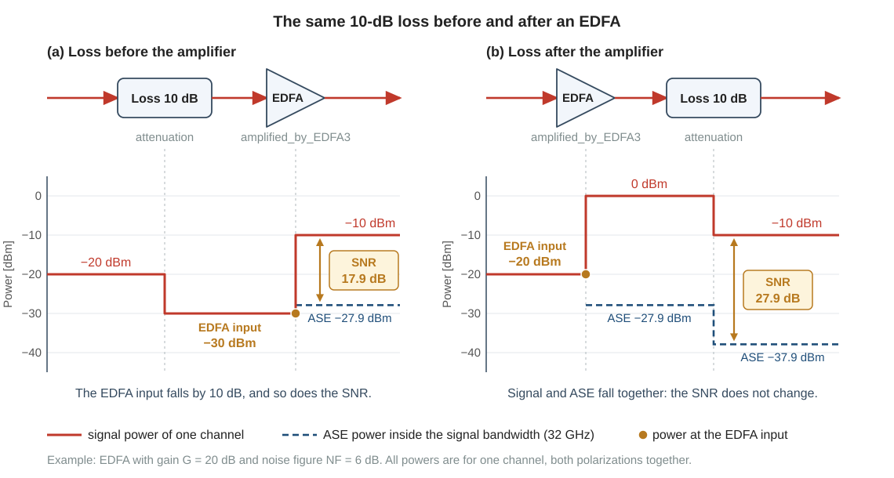
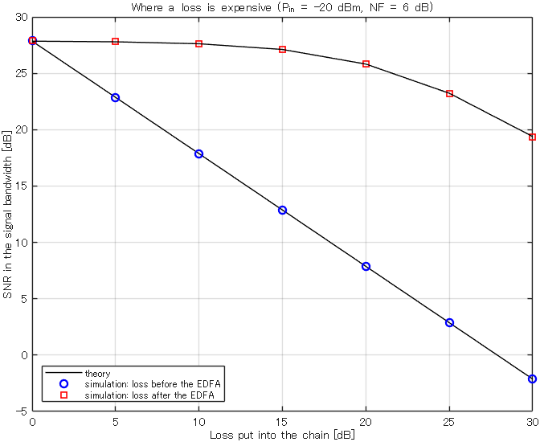

Background
15EDFA and ASE noise
An optical amplifier gives back the power that the switch has lost, but it also adds noise. This page gives the formula for this noise, shows that the signal-to-noise ratio (SNR) after an amplifier is set by the power at its input, and explains how the scripts model the limited output power of an amplifier. Page 12 stated that the lowest point of the level diagram decides the signal quality. This page gives the reason.
matlab/demos/demo15_edfa_ase.mLibrary: amplified_by_EDFA3, attenuation, calc_signal_power1. Why you need this
Between the transmitter and the optical amplifier, the switch of this research loses most of the signal power: 30.5 dB in the conventional three-stage switch with \(M = 64\) and \(N = 96\) (page 11). The amplifier, an erbium-doped fiber amplifier (EDFA), restores the power. If the EDFA did nothing else, loss would be harmless. But the EDFA adds noise, and the weaker the signal is when it arrives at the EDFA, the more this noise disturbs it.
The title of the planned paper contains the words "low-loss wavelength routing". The loss that these words mean is the loss in front of the EDFA. With the formulas of this page you can calculate what one dB of loss costs, and you can see why it matters where the loss is: before the amplifier or after it.
An EDFA restores the power, but not the signal quality. The SNR after an EDFA is set by the signal power at its input. A loss before the EDFA lowers the SNR by the same number of dB. The same loss after the EDFA changes the SNR very little.
The formulas of this page are the formulas of the library function amplified_by_EDFA3; the header of the function derives them. The statements about the switch come from the two papers of the laboratory. The page calls them the JLT paper and the JOCN paper.
- Mitsuya et al., "Three-Stage Optical Circuit Switch Architectures for Intra-Datacenter Networking," J. Lightw. Technol., vol. 43, no. 2, pp. 400-407, 2025 (doi 10.1109/JLT.2024.3465208)
- Nagai et al., "Design and Verification of Large-Scale Optical Circuit Switch Using ULCF AWGs for Datacenter Application," J. Opt. Commun. Netw., 2018
2. Gain, ASE noise and noise figure
Gain
An EDFA is an optical amplifier: light enters, and the same light leaves with more power. The light is not converted to an electrical signal on the way. One EDFA amplifies many wavelength channels at the same time. A wavelength-routing (WR) switch uses this property. Its aggregation coupler collects \(N\) signals with different wavelengths into one fiber, and one EDFA amplifies all of them (page 11).
The gain \(G\) is the ratio of the output power to the input power. In dB, a gain is added to a power in dBm: a signal of -20 dBm and a gain of 20 dB give 0 dBm. The field is multiplied by \(\sqrt{G}\), in the same way as a loss multiplies it by a factor below 1 (page 12).
ASE noise and the noise figure
An EDFA also emits light by itself. This light is not related to the signal, and the EDFA amplifies it together with the signal. It is called amplified spontaneous emission (ASE). For the receiver, ASE is noise. In the simulation it is white Gaussian noise over the whole simulated band (the band of width \(F_s\) around the carrier, page 13), like the AWGN of the practice chapters. There is one difference: you do not choose its power from an SNR. The amplifier fixes it.
The noise figure \(F\) is the number that tells how much ASE an amplifier produces. Let \(G\) and \(F\) be plain ratios, not values in dB. The ASE power in one polarization and in a bandwidth \(B\) is then
The product \(h\nu\) is the energy of one photon: \(h\) is the Planck constant and \(\nu\) is the optical frequency. The code takes the frequency at the wavelength 1550 nm, which gives \(h\nu = 1.2816\times10^{-19}\ \mathrm{J}\). An EDFA emits ASE in both polarizations. Equation (1) counts one of them, and this is the reason for the factor 1/2.
In dB the noise figure is \(\mathrm{NF} = 10\log_{10}F\). According to the header of amplified_by_EDFA3, a real EDFA has a noise figure of about 4 to 6 dB, and 3 dB is the lowest possible value at high gain.
The SNR after the amplifier
The signal of this project is polarization multiplexed: its two polarizations carry independent signals of equal power (page 14). Let \(P_{\mathrm{in}}\) be the power of one wavelength channel at the input of the amplifier, both polarizations together. The coherent receiver detects the two polarizations separately, so a signal is disturbed only by the ASE in its own polarization. The receiver also passes only a band whose width is the symbol rate \(B\) (page 14), so only the ASE inside this band counts. Three lines give the SNR of one polarization:
- signal power of one polarization after the amplifier: \(G\,P_{\mathrm{in}}/2\)
- ASE power in the same polarization inside the band \(B\), from Eq. (1): \((GF-1)\,h\nu B/2\)
- the ratio of the two:
The last step neglects the 1 beside \(GF\). The two step scripts, step21_two_stage_one_point and step22_three_stage_one_point, each simulate one operating point, that is one set of parameters such as the transmitter power and the switch size. At their default operating points the gains lie between 16.7 dB and 40.5 dB, and the error of this step is below 0.05 dB. In dB, Eq. (2) is a subtraction:
The number 53.9 comes from the constants of the code: for \(B = 32\ \mathrm{GHz}\) the power \(h\nu B\) is \(1.2816\times10^{-19}\ \mathrm{J} \times 32\times10^{9}\ \mathrm{Hz} = 4.10\times10^{-9}\ \mathrm{W}\), which is -53.87 dBm. Table 1 gives the constant for the two symbol rates of the given scripts.
| Script | baudrate | \(h\nu B\) | NF | SNR [dB] from Eq. (3) |
|---|---|---|---|---|
step21_two_stage_one_point | 24 GHz | -55.12 dBm | 5 dB | \(P_{\mathrm{in}}\ [\mathrm{dBm}] + 50.12\) |
step22_three_stage_one_point, demo15_edfa_ase | 32 GHz | -53.87 dBm | 6 dB | \(P_{\mathrm{in}}\ [\mathrm{dBm}] + 47.87\) |
The header of amplified_by_EDFA3 writes the same rule for a bandwidth of 12.5 GHz. The constant is then 58 dB. This page uses the symbol rate as the bandwidth, because this is the width of the band that the receiver passes.
The JLT paper and the JOCN paper both state a noise figure of 6 dB for this EDFA. The value 5 dB of step21_two_stage_one_point is the value of the earlier laboratory code that this script follows.
Example: at the default operating point of step22_three_stage_one_point (\(P_{\mathrm{Tx}} = 4\ \mathrm{dBm}\), \(M = 64\)) the channel reaches the EDFA with 4 - 30.5 = -26.5 dBm. Equation (3) gives -26.5 + 53.87 - 6 = 21.37 dB. The script prints 21.38 dB for this term, in the line ASE of the EDFA of its SNR table. The difference of 0.01 dB is a rounding effect: the scripts use exactly 3 dB for the factor 2 between the channel and one polarization, and the exact value is 3.01 dB.
\(P_{\mathrm{in}}\) in Eqs. (2) and (3) is the power of one channel, in both polarizations, at the input of the amplifier. It is not the transmitter power, and it is not the output power of the amplifier. The scripts simulate one polarization, so every power that they print is 3 dB lower than the power of the channel (pin = PTx - 3*pol_flag). Add 3 dB to a printed power before you put it into Eq. (3).
In the code. The lines of amplified_by_EDFA3 that make the ASE are Eq. (1), with the bandwidth \(B\) replaced by the width \(F_s\) of the simulated band (Fs):
P_ase = (gain*F - 1) * h * f * Fs / 2; % ASE power in one polarization inside Fs [W]
noise_re = randn(n, 1); % real part first, then the imaginary part (legacy order)
noise_im = randn(n, 1);
% (noise_re + 1i*noise_im)/sqrt(2) has the mean power 1, so aseNoise has P_ase
aseNoise = sqrt(P_ase) * (noise_re + 1i*noise_im) / sqrt(2);
amplified_signal = sqrt(gain) * signal + aseNoise; % POWER gain G = FIELD factor sqrt(G)The function adds ASE over the whole simulated band. The receive filter later removes the part outside the signal band, so the fraction \(B/F_s\) of P_ase remains. The oversampling rate up is the number of samples per symbol, so \(F_s\) is up times \(B\) (page 13). With the default value up = 2, one half of P_ase remains. Table 2 lists the symbols of this page with their names in the code.
| Symbol | Meaning | In the code |
|---|---|---|
| \(G\) | gain as a power ratio | gain in the function; in dB gain_dB (function) and edfaGain (scripts) |
| \(F\), \(\mathrm{NF}\) | noise figure as a ratio and in dB | F and NF_dB in the function; NF and NF2 in the scripts |
| \(h\nu\) | energy of one photon at 1550 nm | h*f in the function |
| \(B\) | symbol rate, the width of the band that the receiver passes | baudrate |
| \(F_s\) | width of the simulated band | Fs |
| \(P_{\mathrm{in}}\) | power of one channel at the amplifier input, both polarizations | In demo15_edfa_ase it is P_in. Inside the function, P_in is the power of the one simulated polarization, which is 3 dB lower. |
| \(P_{\mathrm{sat}}\) | saturation output power (section 4) | edfa_sat1, edfa_sat2 |
| \(N_{\mathrm{ch}}\) | number of wavelength channels that one amplifier carries (section 4) | argument N of the function; in step21_two_stage_one_point it is N_agg |
3. The input power sets the SNR
Equation (2) contains the input power, the noise figure and the bandwidth. The gain has dropped out, and nothing that follows the amplifier appears in it. Figure 1 shows what this means for a loss of 10 dB.

- Loss before the amplifier (Fig. 1(a)). The EDFA input falls from -20 dBm to -30 dBm. The ASE power does not depend on the input power (Eq. (1)), so it stays at -27.9 dBm. This value is twice Eq. (1) for \(G = 100\), \(F = 3.98\) and \(B = 32\ \mathrm{GHz}\). The SNR falls by 10 dB, from 27.9 dB to 17.9 dB.
- Loss after the amplifier (Fig. 1(b)). The loss attenuates the signal and the ASE by the same factor. Both fall by 10 dB, and their ratio stays at 27.9 dB.
The rule is: every dB of loss before the EDFA costs one dB of SNR, and a loss after the EDFA costs almost nothing. The word "almost" has a reason. The receiver has an amplifier of its own, and section 4 shows when its noise counts.
What this means for the switch
In a WR switch the EDFA follows the aggregation coupler. The space switch in front of the WR switch and the aggregation coupler are therefore losses before the EDFA. The arrayed-waveguide grating (AWG), which separates the wavelength channels behind the EDFA, and the third-stage switch of a three-stage switch are losses after it. The JLT paper notes that the signal power is generally lowest just before the EDFA. The JOCN paper states that the SNR of the switch is mostly determined by the EDFA input power. This is why the lowest point of the level diagram of page 12, the EDFA input, decides the signal quality.
The largest loss before the EDFA is the aggregation coupler: 24.5 dB for \(N = 96\). An AWG with \(K\) input ports allows \(K\) small couplers with \(N/K\) inputs to replace it, each followed by its own EDFA (page 17). Table 3 shows the effect. It uses step21_two_stage_one_point at its default operating point (\(P_{\mathrm{Tx}} = -4\ \mathrm{dBm}\), 8 x 8 DC switch) and changes only ULCF_deg, the name of \(K\) in the code. The DC switch is the space switch of the two-stage switch (page 11). In front of the aggregation coupler the channel power is -4 - 3 - 12 = -19 dBm: this script subtracts 3 dB for the fan-in and fan-out devices of a multicore fiber (fiber_flag = 1) and 12 dB for the DC switch (page 21 explains both).
| \(K\) | Coupler | Coupler loss | EDFA input | SNR, Eq. (3) | SNR, script |
|---|---|---|---|---|---|
| 1 | 96 x 1 | 24.5 dB | -43.5 dBm | 6.62 dB | 6.63 dB |
| 4 | 24 x 1 | 17.5 dB | -36.5 dBm | 13.62 dB | 13.63 dB |
| 12 | 8 x 1 | 10.5 dB | -29.5 dBm | 20.62 dB | 20.63 dB |
Each coupler stage that is saved removes 3.5 dB of loss and raises this SNR by 3.5 dB. With \(K = 12\) four stages are saved, and the improvement is 14 dB. The JOCN paper states that a loss reduction of over 10 dB is possible with 12 input ports: a factor of 12 in power is 10.8 dB, and with the loss rule of 3.5 dB per coupler stage the reduction becomes 14 dB. This is the "low-loss wavelength routing" of the title.
In the code. The two step scripts evaluate Eq. (2) without the approximation. They print the result in dB in the line ASE of the EDFA of their SNR table (the last column of Table 3). This is the line of the code:
nsr_ase1 = (ase1_mW*baudrate/Fs)/(G1*10^(budget_target(4)/10));nsr_ase1 is the ASE power divided by the signal power, that is 1/SNR. The numerator is the ASE power of Eq. (1) inside the signal band: ase1_mW is the ASE power of one polarization inside Fs, in mW. The denominator is the amplified power of the simulated polarization: budget_target(4) is its power at the EDFA input in dBm, and G1 is the gain.
4. Saturation and the pre-amplifier
The output power is limited and shared
An EDFA cannot deliver an unlimited output power. Its total output power, all wavelength channels and both polarizations together, is limited to the saturation output power \(P_{\mathrm{sat}}\). Both papers use 20 dBm (100 mW), and so do the scripts (edfa_sat1 = 20). The \(N_{\mathrm{ch}}\) channels that pass through one EDFA share this power equally, and each channel divides its share between its two polarizations. The share of the one field that the scripts simulate is therefore
The signal does not get this share alone. The output power of an amplifier is shared by all signals and by the ASE. The \(N_{\mathrm{ch}}\) channels fill a band of \(N_{\mathrm{ch}}\) channel spacings, so the ASE inside one channel spacing belongs to each channel. The channel spacing is 50 GHz (signal_interval = 50e9). In the scripts, \(P_{\mathrm{out}}\) is therefore the power of the simulated signal plus the ASE of its polarization inside 50 GHz. The signal alone is a little lower.
The conventional WR switch has one EDFA for all channels: \(N_{\mathrm{ch}} = N\). With \(K\) couplers and \(K\) EDFAs, each EDFA carries \(N_{\mathrm{ch}} = N/K\) channels, and each channel gets \(K\) times more power (Table 4).
| \(K\) | \(N_{\mathrm{ch}} = N/K\) | \(10\log_{10}N_{\mathrm{ch}}\) | Channel | Field, Eq. (4) | Signal, script |
|---|---|---|---|---|---|
| 1 | 96 | 19.82 dB | 0.18 dBm | -2.82 dBm | -4.449 dBm |
| 4 | 24 | 13.80 dB | 6.20 dBm | 3.20 dBm | 2.815 dBm |
| 12 | 8 | 9.03 dB | 10.97 dBm | 7.97 dBm | 7.884 dBm |
The signal alone is below the share of the field by about 0.1 dB for \(K = 12\), 0.4 dB for \(K = 4\) and 1.6 dB for \(K = 1\). For \(K = 1\) the EDFA input is so low (Table 3) that the ASE inside 50 GHz has 45 % of the signal power.
The scripts operate the EDFA exactly at this limit. They ask for the gain that would lift the signal alone to \(P_{\mathrm{out}}\), and the function then lowers signal and ASE together until the signal and the ASE inside 50 GHz have \(P_{\mathrm{out}}\) (section 5). The gain is therefore a result, not a parameter. At the default operating point of step22_three_stage_one_point the simulated field arrives with -29.5 dBm and \(P_{\mathrm{out}}\) is -2.82 dBm, so the script asks for a gain of 26.68 dB. The signal leaves with -2.87 dBm: here the ASE takes 0.05 dB.
In the scripts, a loss before the EDFA therefore does not lower the power \(P_{\mathrm{out}}\) at the EDFA output. The script raises the gain by the same number of dB, and the ASE power rises with the gain (Eq. (1)), so the ASE takes a larger part of \(P_{\mathrm{out}}\). The SNR falls by the same amount as in Fig. 1(a). Saturation does not change the SNR that this EDFA produces, because Eq. (2) does not contain \(G\). It decides how much power leaves the EDFA, and with it how much power reaches the next amplifier.
The pre-amplifier
In the simulated chain a second EDFA stands directly in front of the receiver: the pre-amplifier. The scripts model it with the same function. It carries one wavelength channel, so \(N_{\mathrm{ch}} = 1\): with edfa_sat2 = 10 dBm, Eq. (4) gives 10 - 3 = 7 dBm for the simulated field. Its noise figure is NF2 = 4 dB. The two papers do not give these two values. They are the values of the laboratory code, as the header of step22_three_stage_one_point says.
The pre-amplifier adds ASE according to the same Eq. (3), with its own input power and with NF2. The ASE of the two amplifiers is independent, so the noise powers add. For SNR values that are ratios, not values in dB, this means
Table 5 compares the two versions of the third-stage switch at the default operating point of step22_three_stage_one_point (\(P_{\mathrm{Tx}} = 4\ \mathrm{dBm}\), \(M = 64\)). Scheme A1 builds the third-stage switch from selectors only. Scheme A2 has a coupler at every output, which adds loss (page 11). The term of the EDFA is 21.38 dB in both cases.
| Third-stage switch | Loss | Pre-amplifier input | SNR, Eq. (3) | SNR, script |
|---|---|---|---|---|
| Scheme A1 (selector + selector) | 6 dB | -12.27 dBm | 37.60 dB | 37.59 dB |
| Scheme A2 (selector + coupler) | 24 dB | -30.27 dBm | 19.60 dB | 19.58 dB |
The script values are slightly lower than Eq. (3). The script includes one more small effect, which it prints in the line noise gain of the equalizer behind the AWG: 0.03 dB here. This page leaves it out.
In Scheme A1 the noise of the pre-amplifier is negligible. In Scheme A2 the coupler of the third-stage switch costs 21 dB. The channel then reaches the pre-amplifier with less power than it had at the EDFA input (-30.3 dBm against -26.5 dBm), and the pre-amplifier adds more noise than the EDFA. Equation (5) gives 17.4 dB for the two amplifiers together. A loss after the EDFA is free only as long as the power at the pre-amplifier input stays well above the power at the EDFA input.
In the code. These lines are taken from the power table that step22_three_stage_one_point prints with its default parameters (Scheme A2). The lines of the other blocks are left out here.
Power after every block [dBm] (one polarization, inside the band Fs)
block simulation budget budget
(total) (total) (target)
[4] Coupler -29.500 -29.500 -29.500
[5] EDFA -2.813 -2.809 -2.872
[8] Fan-in/out -33.141 -33.133 -33.268
[9] Pre-amp 7.020 7.020 6.794Equation (4) gives -2.823 dBm for block [5] (\(N_{\mathrm{ch}} = 96\)) and 7.000 dBm for block [9] (\(N_{\mathrm{ch}} = 1\) and edfa_sat2). The column (target) is the power of the signal alone. After an amplifier it is lower than the value of Eq. (4): the rest of the share is ASE and, at the pre-amplifier, also the disturbances that arrive together with the signal (section 5). The two columns (total) are the power that a power meter shows: the signal and everything else inside the simulated band Fs, with all the ASE of this band. They are close to the value of Eq. (4), but not equal to it, because Fs is not the channel spacing. The power of the target signal after block [8] is the input of the pre-amplifier: -33.268 dBm in one polarization, that is -30.27 dBm for the channel, the value in Table 5.
5. How the code calls the amplifier
Both amplifiers are calls of the same library function. These are blocks [5] and [9] of step21_two_stage_one_point, without the lines that record the power. Blocks [6] to [8] lie between them in the script. The words "legacy lines" in the comments refer to the earlier laboratory code that the script follows.
% [5] EDFA of the wavelength-routing switch (legacy lines 139-141)
% edfa_sat1 is shared by N_agg wavelengths and by the polarizations.
% The gain lifts the signal to the share of the simulated field.
% The ASE inside the channel spacing signal_interval counts for this share too:
% the amplifier scales signal and ASE down a little (step 3 of the function).
sat1 = edfa_sat1 - 3*pol_flag; % output power of one polarization [dBm]
edfaGain = sat1 - 10*log10(N_agg) - calc_signal_power(signal);
[signal, aseNoise] = amplified_by_EDFA3(signal, Fs, edfaGain, NF, sat1, ...
N_agg, signal_interval);
% [9] Pre-amplifier of the receiver (legacy lines 190-195)
% It carries one wavelength: only the polarizations share its output power.
sat2 = edfa_sat2 - 3*pol_flag; % output power of one polarization [dBm]
edfaGain = sat2 - calc_signal_power(signal);
[signal, aseNoise2] = amplified_by_EDFA3(signal, Fs, edfaGain, NF2, sat2, ...
1, signal_interval);In each block, the line that sets edfaGain is Eq. (4) solved for the gain: the share of the simulated field minus its input power. N_agg is the number of wavelengths on one coupler and one EDFA, N/ULCF_deg, which is 8 with the default parameters. Table 6 explains the arguments in the order of the call.
| Argument | In block [5] | Meaning and unit |
|---|---|---|
signal | signal | Optical field of one polarization of one wavelength channel, one column vector [sqrt(W)]. |
Fs | Fs = 48 GHz | Sampling rate = width of the simulated band [Hz]. The function makes ASE over this whole band. |
gain_dB | edfaGain | Wanted power gain [dB]. The scripts choose it so that the signal alone would reach the output limit. |
NF_dB | NF = 5 dB | Noise figure [dB]. |
sat | sat1 = 17 dBm | Saturation output power, counted for the one simulated polarization [dBm]. The caller subtracts the 3 dB for polarization multiplexing. |
N | N_agg = 8 | Number of wavelength channels that this amplifier carries. The function subtracts \(10\log_{10}N\) from sat. For the pre-amplifier it is 1. |
B_ref | signal_interval = 50 GHz | Optical bandwidth whose ASE shares the output power with the signal [Hz]. The scripts pass the channel spacing. Only step 3 below uses it. It does not change the ASE that the function adds. |
| output 1 | signal | Amplified field with ASE [sqrt(W)]. |
| output 2 | aseNoise | The ASE field that is inside output 1 [sqrt(W)]. The step scripts use it to print and to check the ASE power. |
Inside the function three steps follow each other:
- Gain. The output limit of this signal is
limit = sat - 10*log10(N), the value of Eq. (4). The field is multiplied by \(\sqrt{G}\). If the amplified signal alone would be abovelimit, the function reduces the gain so that the signal has exactly the powerlimit. - ASE. The function adds complex Gaussian noise with the power of Eq. (1) for the bandwidth
Fs(the code lines of section 2). - Output limit. The function calculates
P_total, the power of the amplified signal plus the ASE power of Eq. (1) for the bandwidthB_ref. It takes this power from the formula and does not measure it on the samples. IfP_totalis abovelimit, the function scales signal and ASE down, so that the signal and the ASE insideB_reftogether have exactly the powerlimit. Signal and ASE get the same factor, so the SNR does not change.
Step 3 counts the ASE inside B_ref, that is inside one channel spacing (section 4), and not the ASE inside the simulated band Fs. The signal alone is therefore a little below the value of Eq. (4). After block [5] of step21_two_stage_one_point its power is 7.884 dBm, not 7.969 dBm. This power and the SNR do not depend on the oversampling rate up. A larger up widens the simulated band and puts more ASE into it (step 2), but step 3 does not count the additional ASE. What changes with up are the powers that are measured over the whole simulated band, such as the column (total) of the power table. The script sets the gain of the pre-amplifier from such a power, so the signal after block [9] also moves a little: by 0.1 dB between up = 2 and up = 8 in this script. The SNR stays the same.
Two mistakes in a call stop the function with an error. First, signal must be one column vector, not a matrix. Second, \(GF\) must not be below 1, that is gain_dB must not be below -NF_dB: Eq. (1) would give a negative ASE power. Step 1 can cause this when the input power is more than NF_dB above the output limit.
6. Run the demo
In MATLAB, make the folder matlab the current folder and run setup_path (once per MATLAB session). Then run demo15_edfa_ase. The run takes a few seconds. Every self-check must print passed.
The script first tests one EDFA against Eqs. (1) and (3). Then it builds the shortest chain that contains both amplifiers of the switch: transmitter, EDFA, pre-amplifier, receiver. It puts one loss into this chain, once before the EDFA and once after it. The amplifier values are those of step22_three_stage_one_point. The channel power before the loss is -20 dBm, as in Fig. 1.
| Section of the script | What it does |
|---|---|
| 1. Parameters | Sets the input power P_in, the two noise figures, the two saturation output powers and the list of losses loss_ary. |
| 2. Test signal and receive filter | Makes a 16QAM waveform for one polarization with TL_QAM at the power P_in - 3 dBm. Makes the rectangular receive filter with nyquistfilter. Calculates \(h\nu B\) in dBm (hfB). |
| 3. One EDFA with a fixed gain | Amplifies the signal by 20 dB without an output limit. Compares the ASE power inside Fs with Eq. (1) and the SNR inside the signal band with Eq. (3). |
| 4. Chain with two amplifiers (simulation) | For every loss of loss_ary, runs the chain twice: with the loss before the EDFA and with the loss after it. Both amplifiers are called as in section 5 of this page. Measures the SNR of the received symbols against the transmitted symbols. |
| 5. Chain with two amplifiers (theory) | Applies Eq. (3) to each amplifier and Eq. (5) to the pair. Prints the table of simulated and calculated SNR. |
| 6. Self-checks | Checks the ASE power and the SNR of section 3, the agreement of the table with the theory, and how much SNR the loss costs before and after the EDFA. |
| 7. Figure | Plots the SNR against the loss for both positions of the loss. |
The script prints this text. It fixes the random numbers with rng(1), so your numbers should be the same.
One EDFA (P_in = -20.00 dBm, gain 20 dB, NF = 6.0 dB)
ASE power in the band Fs: -27.86 dBm (formula -27.88 dBm)
SNR in the signal band : 27.87 dB (rule P_in + 53.87 - NF = 27.87 dB)
SNR in the signal band [dB] for a loss in the chain
loss loss before the EDFA loss after the EDFA
[dB] simulation theory simulation theory
0 27.87 27.84 27.88 27.84
5 22.84 22.86 27.80 27.79
10 17.83 17.87 27.65 27.62
15 12.88 12.87 27.15 27.11
20 7.87 7.87 25.85 25.81
25 2.87 2.87 23.18 23.22
30 -2.11 -2.13 19.37 19.38
Self-check 1 passed: ASE power and SNR of one EDFA follow the formulas
Self-check 2 passed: SNR of the chain = theory within 0.5 dB (largest difference 0.04 dB)
Self-check 3 passed: a loss of 10 dB lowers the SNR by 10.04 dB before the EDFA, by 0.24 dB after it
demo15_edfa_ase. Circles: the loss is before the EDFA. Squares: the same loss is after the EDFA. Black lines: Eqs. (3) and (5).The circles lie on a straight line that falls by 1 dB for every dB of loss. Their values for 0 dB and 10 dB are the two SNR values of Fig. 1. The squares stay near 27.8 dB at first. They bend down when the loss has made the input of the pre-amplifier so low that its ASE counts. At 30 dB the squares are still about 21.5 dB above the circles.
- All three self-checks print
passed, and your figure looks like Fig. 2. - You can calculate the first row of the table (27.84 dB) by hand with Eqs. (3), (4) and (5).
- You can say in one sentence why the squares bend down and the circles do not.
Change one parameter of section 1 of the script at a time. Predict the result with the equations of this page before you run the script, then compare. Set the parameter back to its old value before the next experiment.
- Set
NF = 4. Which numbers of the output rise by 2 dB, and which do not? - Set
loss_ary = 0:10:40. Calculate both SNR values of the row for 40 dB. - Find the input power
P_infor which the SNR after one EDFA (section 3 of the script) is 20 dB.
What you should see
1. The SNR of section 3 becomes 29.88 dB, and every value of the column loss before the EDFA rises by 2 dB. The column loss after the EDFA rises by 2 dB for a small loss, but only from 19.37 dB to 19.61 dB for 30 dB: there the pre-amplifier makes most of the noise, and you did not change NF2.
2. Before the EDFA: 27.87 - 40 = -12.13 dB (simulation -12.11 dB). After the EDFA: the pre-amplifier input is 0.18 - 40 = -39.82 dBm, Eq. (3) gives -39.82 + 53.87 - 4 = 10.05 dB, and Eq. (5) with 27.87 dB gives 9.98 dB (simulation 9.99 dB). Self-check 3 now compares the rows for 0 dB and 20 dB.
3. Equation (3) solved for the input power: 20 - 53.87 + 6 = -27.87 dBm. With P_in = -27.87 the script prints 20.00 dB.
7. Check your understanding
- You run
step22_three_stage_one_pointwithPTx = 0,sw_size = 128andstage3_coupler_flag = 0. What is the channel power at the EDFA input, and which SNR does the ASE of the EDFA allow? How much does this SNR change whensw_sizeis 64?Answer
The signal passes two selectors in the first-stage switch: 2 × 0.5 × 7 = 7 dB. The aggregation coupler costs 24.5 dB. The EDFA input is 0 - 7 - 24.5 = -31.5 dBm. Equation (3): -31.5 + 53.87 - 6 = 16.37 dB (the script prints 16.38 dB). With
sw_size = 64the first-stage switch costs 6 dB, 1 dB less, and the SNR is 1 dB higher: 17.37 dB. - A WR switch with \(N = 96\) uses \(K = 4\) EDFAs with
edfa_sat1 = 20dBm. Which output power does Eq. (4) give for the simulated field? Which gain does the script ask for if the field arrives with -39.5 dBm?Answer
Each EDFA carries 96 / 4 = 24 channels. Equation (4): 20 - 13.80 - 3 = 3.20 dBm. The script asks for a gain of 3.20 - (-39.5) = 42.7 dB. These are the numbers of
step21_two_stage_one_pointwithULCF_deg = 4. The signal alone leaves the EDFA with 2.82 dBm (Table 4), because the ASE inside one channel spacing takes a part of the 3.20 dBm. - The AWG of the JOCN paper has a higher loss than a conventional AWG:
step21_two_stage_one_pointuses 9 dB for the AWG and 3.5 dB for a 1 × 2 splitter in front of it (page 17 explains this element), andstep22_three_stage_one_pointuses 6 dB for its AWG. Which of the two terms of Eq. (5) does this extra loss change? Is it a problem?Answer
The AWG follows the EDFA, so the term of the EDFA does not change. The extra loss lowers the input power of the pre-amplifier and so the term \(\mathrm{SNR}_{\mathrm{pre}}\). At the default operating point of
step21_two_stage_one_pointthis term is 44.08 dB, far above the 20.63 dB of the EDFA, so the extra loss does almost no harm. The JOCN paper gives the same reason: the higher loss of its AWG hardly changes the SNR, because the SNR is mostly determined by the EDFA input power. - In the demo, a loss of 10 dB after the EDFA lowers the SNR by 0.24 dB. Calculate this cost with Eqs. (3), (4) and (5).
Answer
The EDFA gives -20 + 53.87 - 6 = 27.87 dB in both cases. By Eq. (4) without the 3 dB, the channel leaves the EDFA with 20 - 19.82 = 0.18 dBm (the ASE takes only 0.01 dB of this share here). Without loss the pre-amplifier gives 0.18 + 53.87 - 4 = 50.05 dB, and Eq. (5) gives 27.84 dB for both. With the loss the pre-amplifier input is -9.82 dBm, its term is 40.05 dB, and Eq. (5) gives \(1/\mathrm{SNR} = 10^{-2.787} + 10^{-4.005} = 1.732\times10^{-3}\), that is 27.62 dB. The cost is 0.22 dB. The simulation gives 0.24 dB.
- Equation (1) has a factor 1/2, and the scripts subtract 3 dB twice: in
pin = PTx - 3*pol_flagand insat1 = edfa_sat1 - 3*pol_flag. What is the common reason?Answer
The simulated field is one of the two polarizations of the channel. It carries half of the channel power, it is disturbed by half of the ASE, and it gets half of the output power of the amplifier. In the SNR the first two halves cancel. This is why Eq. (2) can be written with the power of the whole channel.
- A colleague proposes to raise the gain of the EDFA by 3 dB to get 3 dB more SNR. Why does this not work? What does raise the SNR?
Answer
A higher gain raises the signal and the ASE by the same factor: for \(GF \gg 1\) the ASE power of Eq. (1) grows in proportion to \(G\). This is why \(G\) is not in Eq. (2). In the scripts the gain is also not free, because the saturation output power fixes the output (Eq. (4)). The SNR rises with a higher input power, that is with less loss before the EDFA or with more transmitter power, and with a lower noise figure.
An EDFA with noise figure \(\mathrm{NF}\) limits the SNR to \(P_{\mathrm{in}}\ [\mathrm{dBm}] + 53.9 - \mathrm{NF}\) for 32 GBd (55.1 for 24 GBd), where \(P_{\mathrm{in}}\) is the power of the channel at the amplifier input. Every dB of loss before the EDFA costs one dB of this SNR, and loss after the EDFA is almost free as long as the input power of the pre-amplifier stays well above the input power of the EDFA. The next two pages build on this: page 16 adds the second kind of disturbance, crosstalk, and page 17 shows how an AWG with several input ports makes the coupler in front of the EDFA smaller.